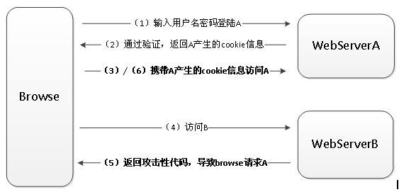

安全类
问题
- 什么是CSRF
- 什么是XSS
- sql注入
回答
前端安全：随着前端技术的发展，安全问题已经从服务器悄然来到了每一个用户的面前，盗取用户数据，制造恶意的可以自我复制的蠕虫代码，让病毒在用户间传播，使服务器当掉，更有甚者可能会在用户不知觉得情况下，让用户成为攻击者，这绝对不是骇人听闻。富客户端的应用越来越广，前端的安全问题随之增多。常见的攻击方法有CSRF、XSS和SQL注入
1.CSRF
1）基本概念和缩写
-- 跨站点请求伪造：Cross-Site Request Forgery 缩写CSRF
2）攻击原理

- 用户是网站A的注册用户，通过身份验证登录网站A，登录之后网站A核查身份是否正确，如果正确就下发cookie，这个cookie保存到用户浏览器当中，这就是完成了一次身份认证的过程。
- 用户又访问了网站B，网站B会给用户下发用户页面的时候，会存在引诱的一个点击，这个点击往往是一个连接，就是指向网站A的一个API接口，接口是GET类型的，比如：www.xxx.com/hack，指向存在漏洞的接口，当用户经不住引诱点击了这个东西，这个点击就访问了A网站，访问A网站这个连接的时候，浏览器会自动上传Cookie，上传之后网站A觉得A这个cookie拿过来之后对身份重新认证，发现是合法用户，就执行了这个接口的动作。
重点：用户在注册网站登录过，没有登录会提示登录；
CSRF能够造成攻击的原理：（实现CSRF攻击不可缺失的两个因素）
网站中某一个接口存在漏洞 这个用户在注册网站确实登录过
3）防御措施
- 加Token验证
访问接口的时候，浏览器自动上传cookie，但是没有手动上传一个Token，这个Token是你注册成功之后，或者没有注册，只有你访问了这个网站，服务器会自动向你本地存储一个Token，在你访问各种接口的时候，如果没有带Token，就不能帮你通过验证，如果只是点击了引诱连接，这个指挥自动携带cookie，不会自动携带Token，所以就避免了那个攻击。
Referer验证
Referer指的是页面来源，如果服务器判断页面来的是否是该站点下面的页面，如果是就执行操作，不是就拦截
隐藏令牌
和Token有点像，做法：隐藏在http的head头中，不会放在链接上，这样就做的比较隐蔽。本质上没有太大的区别。只是使用方式有一点差别。
2. XSS
1）基本概念和缩写
-- 跨域脚本攻击：Cross-Site Scripting 缩写XSS
2）攻击原理及类型
- 原理
攻击者往web页面里插入恶意html标签或者JavaScript代码。比如，攻击者在论坛里放一个看似安全的链接，骗取用户点击后，窃取cookie中的用户私密信息；或者攻击者在论坛中加一个恶意表单，当用户提交表单的时候，却把信息传送到攻击者的服务器中，而不是用户原本以为的信任站点。
- 类型
- XSS反射型攻击:恶意代码并没有保存在目标网站，通过引诱用户点击一个链接到目标网站的恶意链接来实施攻击的。
- XSS存储型攻击:恶意代码被保存到目标网站的服务器中，这种攻击具有较强的稳定性和持久性，比较常见场景是在博客，论坛等社交网站上，但OA系统，和CRM系统上也能看到它身影
- 攻击能做些什么
- .窃取cookies，读取目标网站的cookie发送到黑客的服务器上
- 读取用户未公开的资料，如果：邮件列表或者内容、系统的客户资料，联系人列表等等
- 增加安全性
- 首先，避免直接在cookie中泄露用户隐私，例如email、密码等。
- 其次，避免使用cookie和系统ip绑定来降低cookie泄露后的危险。这样攻击者得到的cookie没有实际价值，不可能拿来重放。
- 如果网站不需要在浏览器端对cookie进行操作，可以在set-cookie末尾加上httpOnly来防止JavaScript代码直接获取cookie。
- 尽量采用POST而非get提交表单
http://www.immoc.com/learn/812
3）防御措施
- 在表单提交或者url参数传递前，对需要的参数进行过滤,请看如下XSS过滤工具类代码
- 过滤用户输入的 检查用户输入的内容中是否有非法内容。如<>（尖括号）、”（引号）、 ‘（单引号）、%（百分比符号）、;（分号）、()（括号）、&（& 符号）、+（加号）等。、严格控制输出
- 任何内容写到页面之前都必须加以encode，避免不小心把HTML tag弄出来
http://www.immoc.com/learn/812
4）和CSRF的区别
XSS不需要做任何的登录认证，核心原理向你页面注入脚本；
eg：比如评论区：如果评论区注入XSS最好的方式可以在你提交区里面写上script标签，img标签上加事件，总之，它的方法利用你合法的渠道向你页面注入js，这是XSS攻击原理。
XSS是向你页面注入js运行，然后js函数体里面做它想做的事情。
CSRF利用你本身的漏洞，去帮你自动执行哪些接口。
--- 这两种方式是不一样的，CSRF要依赖用户，要登录网站。
5）总结
关于名称要把中文意思说出来
原理说清楚
防御措施
3.sql注入原理
就是通过把SQL命令插入到Web表单递交或输入域名或页面请求的查询字符串，最终达到欺骗服务器执行恶意的SQL命名
总的来说有以下几点：
- 永远不要信任用户的输入，要对用户的输入进行校验，可以通过正则表达式，或限制长度，对单引号和双“-”进行转换等。
- 永远不要使用动态拼接SQL。可以使用参数化的SQL或直接使用存储过程进行数据查询存取。
- 永远不要使用管理员权限的数据库连接，为每个应用单独的权限有限的数据库连接。
- 不要把机密信息明文存放，请加密或hash掉密码和敏感的信息。